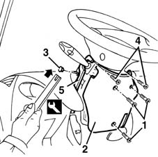

7040A26 steering column trim - r+r
- Path
- Procedures > 70 FITTINGS > 7040 BODYSHELL INTERIOR TRIMS AND FITTINGS > 7040A passenger compartment trim > 7040A26 steering column trim - r+r
- Kind
- repair procedure (removal / refitting; the operation number is the code)
- Applies to
- all engines; all production periods
- Interactive page
- https://sloeber94.github.io/elrnDB-fMltpl/en/#/2892174
Applies to: all engines; all production periods
 Removing
Removing
 Refitting
Refitting1. Undo the bolts.
2. Remove the bottom trim.
3. Remove the retaining buttons using the appropriate tool.
 | Name | Country |
|---|---|---|
3 | Scraper blade | 1.878.077.000 |
4. Undo the bolts.
5. Remove the top trim.

Applies to: all engines; all production periods
Refitting
RemovingCheck that the steering column trim is undamaged.
Refit the top trim, fixing it using the bolts.
Fit the retaining buttons.
Refit the bottom trim, fixing it using the bolts.
Topics that link to this page (10)
- 3350E20 steering angle sensor r r
- 4110A30 Steering control shaft SUPPORT - R.R.
- 4110A31 Steering control shaft SUPPORT - R.R. for versions with Air Bag
- 5505C30 under-facia wiring - r r
- 5505C31 under-facia wiring - r r
- 5520A12 ignition switch assembly - r r for versions with air bag
- 5550A12 complete stalk unit - r+r for versions with air bag
- 5580C12 clock spring for air bag module on steering wheel r r
- 5580C80 airbag system wiring bundle - r r or replace
- 5580C82 airbag system wiring bundle - r r or replace with facia removed